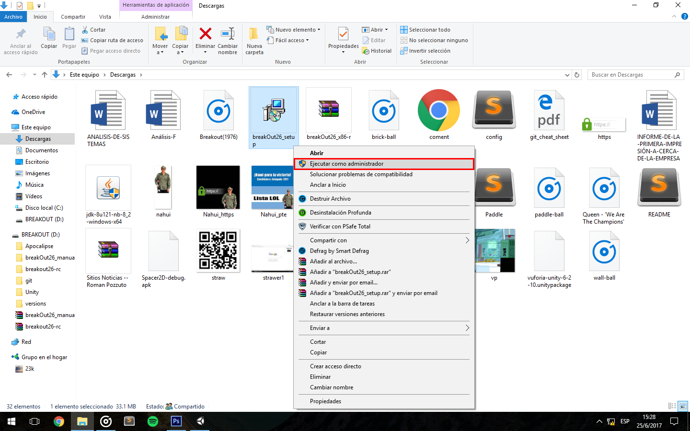
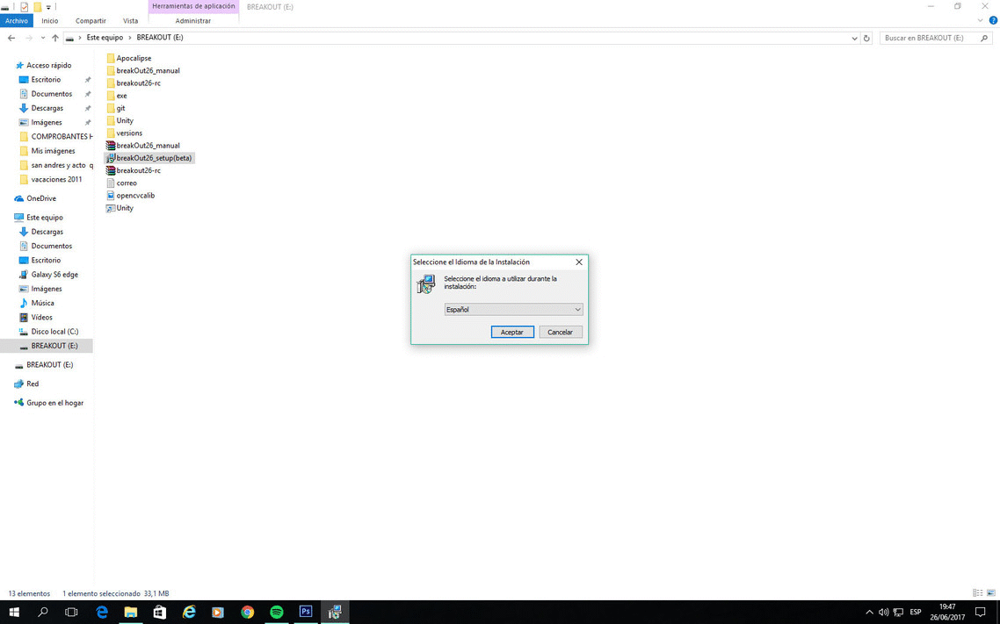
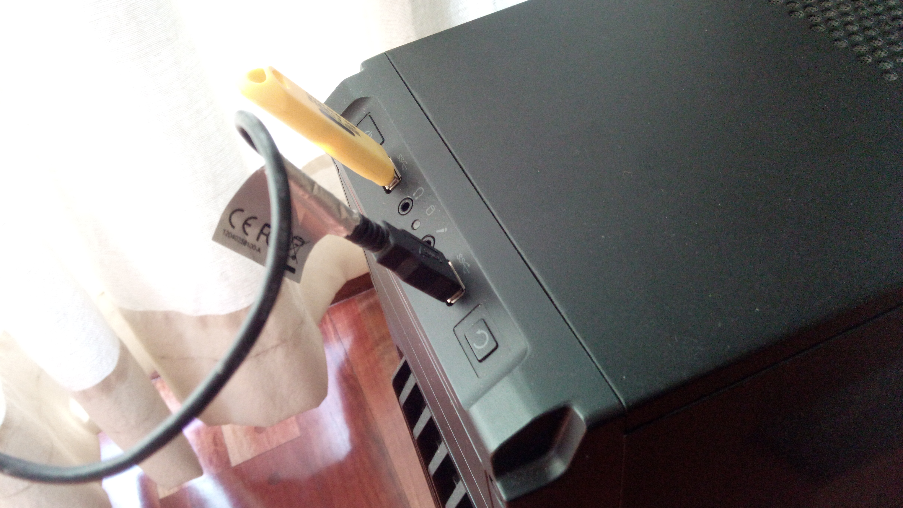

breakout26 (guia de instalacion).
Requisitos de sistema (recomendados).
Pasos de instalacion:
Requisitos de sistema (recomendados):
- S.O: Windows 7,8 o superior de 32 o 64 bits.
- Una Webcam
- 4GB de RAM o superior.
- Procesador dual-core 2 Ghz o superior (ej: intel core 2 duo).
- Espacio disponible en el disco: 125 MB.
Pasos de instalacion:
-
Paso 1: Descargar aqui el archivo "breakOut26_setup.exe".
-
Paso 2: Una vez descargado el archivo .exe, hacer sobre el click derecho "Ejecutar como administrador" (Se nos abrira un cartel, el cual clickeamos si).

-
Paso 3: Seguir en orden este gif, el cual nos mostrara que hacer en cada ventana del setup.

-
Paso 4: Conectar la webcam en algun puerto USB que este disponible.

Desarrolladores:
- Roman Pozzuto (Project Leader & Developer).
- Roberto Vazquez (Developer).
- Sofia Lopez (Developer & Documentary).
- E.T N°26 "Confederacion Suiza" D.E N°6 (CD).